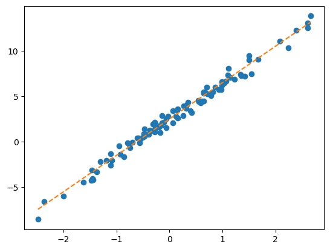

import torch
import matplotlib.pyplot as plt 01wk-2: 회귀분석 (1) – 단순회귀의 학습전략, 경사하강법

1. 강의영상
2. Imports
3. 로드맵
- 회귀분석 \(\to\) 로지스틱 \(\to\) 심층신경망(DNN) \(\to\) 합성곱신경망(CNN)
4. 파이썬 문법 복습을 위한 참고자료
- 넘파이 문법이 약하다면? (reshape, concatenate, stack, row/col vector)
- reshape: 넘파이공부 2단계 reshape 참고
- concatenate,stack: 아래 링크의 넘파이공부 4단계 참고
- col-vec,row-vec: 3x1 col-vec 선언방법, 1x3 row-vec 선언방법에서
[[1],[2],[3]]혹은[[1,2,3]]와 같은 표현이 이해안되면 링크의 첫번째 동영상 12:15 - 22:45 에 해당하는 분량을 학습할 것.
5. 회귀모형
A. 모형소개
- model: \(y_i= w_0+w_1 x_i +\epsilon_i = 2.5 + 4x_i +\epsilon_i, \quad i=1,2,\dots,n\)
- model: \({\bf y}={\bf X}{\bf W} +\boldsymbol{\epsilon}\)
- \({\bf y}=\begin{bmatrix} y_1 \\ y_2 \\ \dots \\ y_n\end{bmatrix}, \quad {\bf X}=\begin{bmatrix} 1 & x_1 \\ 1 & x_2 \\ \dots \\ 1 & x_n\end{bmatrix}, \quad {\bf W}=\begin{bmatrix} 2.5 \\ 4 \end{bmatrix}, \quad \boldsymbol{\epsilon}= \begin{bmatrix} \epsilon_1 \\ \dots \\ \epsilon_n\end{bmatrix}\)
B. 회귀모형에서 데이터 생성
torch.manual_seed(43052)
ones= torch.ones(100).reshape(-1,1)
x,_ = torch.randn(100).sort()
x = x.reshape(-1,1)
X = torch.concat([ones,x],axis=-1)
W = torch.tensor([[2.5],[4]])
ϵ = torch.randn(100).reshape(-1,1)*0.5
y = X@W + ϵplt.plot(x,y,'o')
plt.plot(x,2.5+4*x,'--')
6. 회귀모형에서 학습이란?
- 파란점만 주어졌을때, 주황색 점선을 추정하는것. 좀 더 정확하게 말하면 given data로 \(\begin{bmatrix} \hat{w}_0 \\ \hat{w}_1 \end{bmatrix}\)를 최대한 \(\begin{bmatrix} 2.5 \\ 4 \end{bmatrix}\)와 비슷하게 찾는것.
given data : \(\big\{(x_i,y_i) \big\}_{i=1}^{n}\)
parameter: \({\bf W}=\begin{bmatrix} w_0 \\ w_1 \end{bmatrix}\)
estimated parameter: \({\bf \hat{W}}=\begin{bmatrix} \hat{w}_0 \\ \hat{w}_1 \end{bmatrix}\)
- 더 쉽게 말하면 아래의 그림을 보고 적당한 추세선을 찾는것이다.
plt.plot(x,y,'o')
- 시도: \((\hat{w}_0,\hat{w}_1)=(-5,10)\)을 선택하여 선을 그려보고 적당한지 판단. –> “인간”지능을 활용하여 더 나은 선을 찾아보자.
plt.plot(x,y,'o')
plt.plot(x,-5+10*x,'--')
- 벡터표현으로 주황색점선을 계산
What = torch.tensor([[-5.0],[10.0]])X.shapetorch.Size([100, 2])plt.plot(x,y,'o')
plt.plot(x,X@What,'--')
- 이건 일단 망한 학습같음..
7. 학습전략
- 이론적으로 추론 <- 회귀분석시간에 배운것
- 컴퓨터의 반복계산을 이용하여 추론 (손실함수도입 + 경사하강법) <- 우리가 오늘 파이토치로 실습해볼 내용.
- 전략: 아래와 같은 3단계 전략을 취한다.
- 1단계: 아무 점선이나 그어본다..
- 2단계: 1단계에서 그은 점선보다 더 좋은 점선으로 바꾼다.
- 3단계: 1-2단계를 반복한다.
8. #1단계실습 – 최초의 직선
1단계 = 아무 점선이나 그어보자..
- \(\hat{w}_0=-5, \hat{w}_1 = 10\) 으로 설정하고 (왜? 그냥) 임의의 선을 그어보자.
What = torch.tensor([[-5.0],[10.0]],requires_grad=True)
Whattensor([[-5.],
[10.]], requires_grad=True)처음에는 \({\bf \hat{W}}=\begin{bmatrix} \hat{w}_0 \\ \hat{w}_1 \end{bmatrix}=\begin{bmatrix} -5 \\ 10 \end{bmatrix}\) 를 대입해서 주황색 점선을 적당히 그려보자는 의미
끝에 requires_grad=True는 나중에 미분을 위한 것
yhat = X@What plt.plot(x,y,'o')
plt.plot(x,yhat.data,'--') # 그림을 그리기 위해서 yhat의 미분꼬리표를 제거
9. #2단계실습 – 업데이트 (다음시간이어서..)
2단계 = 업데이트 = 최초의 점선에 대한 ‘적당한 정도’를 판단하고 더 ’적당한’ 점선으로 업데이트 한다.
A. 손실함수
- ’적당한 정도’를 판단하기 위한 장치: loss function 도입!
\(loss=\sum_{i=1}^{n}(y_i-\hat{y}_i)^2=\sum_{i=1}^{n}(y_i-(\hat{w}_0+\hat{w}_1x_i))^2\)
\(=({\bf y}-{\bf\hat{y}})^\top({\bf y}-{\bf\hat{y}})=({\bf y}-{\bf X}{\bf \hat{W}})^\top({\bf y}-{\bf X}{\bf \hat{W}})\)
- loss 함수의 특징
- \(y_i \approx \hat{y}_i\) 일수록 loss값이 작다.
- \(y_i \approx \hat{y}_i\) 이 되도록 \((\hat{w}_0,\hat{w}_1)\)을 잘 찍으면 loss값이 작다.
- (중요) 주황색 점선이 ‘적당할 수록’ loss값이 작다.
loss = torch.sum((y-yhat)**2)
losstensor(8587.6875, grad_fn=<SumBackward0>)- 우리의 목표: 이 loss(=8587.6875)을 더 줄이자.
- 궁극적으로는 아예 모든 조합 \((\hat{w}_0,\hat{w}_1)\)에 대하여 가장 작은 loss를 찾으면 좋겠다. (단계2에서 할일은 아님)
- 문제의 치환: 생각해보니까 우리의 문제는 아래와 같이 수학적으로 단순화 되었다.
- 적당해보이는 주황색 선을 찾자 \(\to\) \(loss(w_0,w_1)\)를 최소로하는 \((w_0,w_1)\)의 값을 찾자.
- 수정된 목표: \(loss(w_0,w_1)\)를 최소로 하는 \((w_0,w_1)\)을 구하라.
- 단순한 수학문제가 되었다. 이것은 마치 \(f(x,y)\)를 최소화하는 \((x,y)\)를 찾으라는 것임.
- 함수의 최대값 혹은 최소값을 컴퓨터를 이용하여 찾는것을 “최적화”라고 하며 이는 산공교수님들이 가장 잘하는 분야임. (산공교수님들에게 부탁하면 잘해줌, 산공교수님들은 보통 최적화해서 어디에 쓸지보다 최적화 자체에 더 관심을 가지고 연구하심)
- 최적화를 하는 방법? 경사하강법
B. 경사하강법
- 경사하강법 아이디어 (1차원)
- 임의의 점을 찍는다.
- 그 점에서 순간기울기를 구한다. (접선) <– 미분
- 순간기울기(=미분계수)의 부호를 살펴보고 부호와 반대방향으로 움직인다.
팁: 기울기의 절대값 크기와 비례하여 보폭(=움직이는 정도)을 조절한다. \(\to\) \(\alpha\)를 도입
최종수식: \(w \leftarrow w - \alpha \times \frac{\partial}{\partial w}loss(w)\)
- 경사하강법 아이디어 (2차원)
- 임의의 점을 찍는다.
- 그 점에서 순간기울기를 구한다. (접평면) <– 편미분
- 순간기울기(=미분계수)의 부호를 살펴보고 부호와 반대방향으로 각각 움직인다.
팁: 여기서도 기울기의 절대값 크기와 비례하여 보폭(=움직이는 정도)을 각각 조절한다. \(\to\) \(\alpha\)를 도입.
- 경사하강법 = loss를 줄이도록 \({\bf W}\)를 개선하는 방법
- 업데이트 공식: 수정값 = 원래값 - \(\alpha\) \(\times\) 기울어진크기(=미분계수)
- 여기에서 \(\alpha\)는 전체적인 보폭의 크기를 결정한다. 즉 \(\alpha\)값이 클수록 한번의 update에 움직이는 양이 크다.
10. HW
없음